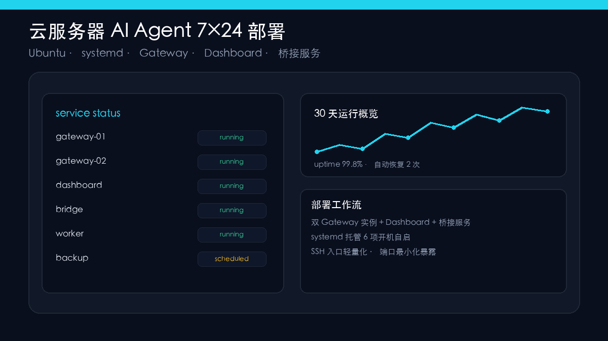

Ubuntu 全链路部署方案，解决 SSH 阻塞、端口暴露、服务自启动

个人开发者想让 AI 助理全天候在线，但云端环境坑多：SSH 阻塞、端口暴露、服务自启。
本项目在 Ubuntu 全链路部署，构建「双 Gateway 实例 + Dashboard + 桥接服务」架构，通过 systemd 托管 6 项开机自启。
个人开发者想让 AI 助理全天候在线，但云端环境坑多：SSH 阻塞、端口暴露、服务自启。
Ubuntu 全链路部署——双 Gateway 实例 + Dashboard + 桥接服务，systemd 托管 6 项开机自启；定位并绕开 OpenSSH rexec 阻塞，改用轻量 SSH 入口。
远程稳定的 AI 工作环境长期运行，排障经验产品化为可复用部署工作流。
前端 Gateway 负责请求路由与负载均衡；后端 Gateway 负责业务逻辑与工具调用。双实例保障高可用。
实时监控 Agent 运行状态、调用次数、Token 消耗与异常告警，便于快速定位问题。
统一处理鉴权、目录白名单与操作留痕；文件操作限制在预设范围内，确保安全。
6 项服务通过 systemd 托管，支持自动重启、崩溃恢复、开机自启动。
定位并绕开 OpenSSH rexec 阻塞，改用轻量 SSH 入口，保证远程连接稳定。
填写后选择发送方式，无需注册登录